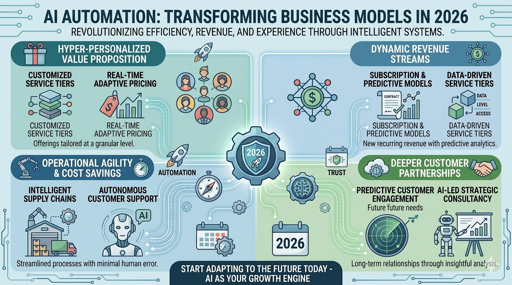

Blog Post
Published - May 06, 2026
How AI Automation Is Transforming Business Models in 2026
AI automation has become a core growth engine in 2026, helping businesses redesign operations, improve decision-making, and create new revenue opportunities.

Artificial intelligence is no longer a futuristic concept. It is now a core driver of innovation, efficiency, and growth. In 2026, AI automation in business has moved beyond experimentation and become a fundamental part of how companies operate, compete, and scale. From startups to global enterprises, organizations are redesigning their strategies around business automation, leveraging intelligent systems to reduce costs, improve customer experiences, and unlock new revenue streams.
This transformation is not just about adopting new tools. It is about reshaping entire business models. In this article, we will explore how AI in business is revolutionizing industries, the key areas impacted, and what the future holds for organizations embracing digital transformation. For a broader overview, see AI in Business: Latest Trends and Use Cases (2026).
The Rise of AI Automation in Business
Over the past decade, businesses have increasingly relied on automation to streamline repetitive tasks. However, traditional automation was rule-based and limited in scope. Today, artificial intelligence in business introduces a new level of intelligence through systems that can learn, adapt, and make decisions.
AI automation in business combines machine learning, natural language processing, and predictive analytics to create smarter workflows. These systems can analyze large volumes of data, identify patterns, and execute tasks with minimal human intervention.
As a result, companies are moving toward business process automation that is not only faster but also more accurate and scalable. This shift is redefining how businesses deliver value and compete in the marketplace.
How AI Is Transforming Business Models
1. From Labor-Intensive to Intelligent Operations
Traditional business models often relied heavily on manual processes. In 2026, automation in small business and large enterprises alike is replacing these workflows with intelligent systems.
Tasks such as data entry, inventory management, and customer support are now handled by AI-powered tools. This allows businesses to:
- Reduce operational costs
- Minimize human error
- Increase productivity
By adopting business automation, companies can operate more efficiently while reallocating human resources to strategic roles. That shift is closely connected to the wider workplace transition covered in How AI Is Changing Jobs in 2026.
2. Data-Driven Decision Making
One of the most significant impacts of AI in business is the ability to make better decisions using data. AI systems can process vast datasets in real time, providing insights that were previously impossible to obtain.
Businesses are now using:
- Predictive analytics to forecast demand
- Customer behavior analysis to personalize experiences
- Real-time dashboards for performance tracking
This shift toward data-driven strategies is a cornerstone of digital transformation, enabling organizations to respond quickly to market changes and customer needs.
3. Personalized Customer Experiences
Customer expectations have evolved, and personalization is now a key differentiator. AI automation in business allows companies to deliver tailored experiences at scale.
Examples include:
- AI-powered chatbots providing instant support
- Personalized product recommendations
- Automated email marketing campaigns
By integrating artificial intelligence in business, companies can enhance customer satisfaction while reducing the workload on support teams.
4. New Revenue Streams and Business Models
AI is not just improving existing processes. It is enabling entirely new business models. Companies are leveraging AI to create innovative products and services, such as:
- Subscription-based AI tools
- Data-as-a-service platforms
- AI-driven consulting solutions
This evolution demonstrates how AI transforming business models is opening new opportunities for growth and differentiation.
Key Areas Where AI Automation Is Making an Impact
Marketing and Sales
Marketing has been revolutionized by AI automation in business. Businesses now use AI to:
- Automate lead generation
- Optimize ad campaigns
- Analyze customer journeys
With business process automation, marketing teams can focus on strategy while AI handles execution and optimization.
Customer Support
Customer service is one of the most visible areas of transformation. AI-powered systems can handle:
- Frequently asked questions
- Order tracking
- Complaint resolution
This reduces response times and improves customer satisfaction. For automation in small business, this is especially valuable as it eliminates the need for large support teams.
Operations and Supply Chain
AI is streamlining operations by optimizing supply chains and inventory management. Businesses can now:
- Predict demand accurately
- Reduce waste
- Improve logistics efficiency
These improvements highlight the power of business automation in enhancing operational performance.
Human Resources
Even HR functions are being transformed by AI in business. AI tools are used for:
- Resume screening
- Employee performance analysis
- Workforce planning
This allows HR teams to focus on employee engagement and organizational development.
Benefits of AI Automation in Business
1. Increased Efficiency
By automating repetitive tasks, businesses can achieve higher productivity levels. Business process automation ensures that tasks are completed faster and with fewer errors.
2. Cost Reduction
AI reduces the need for manual labor and minimizes operational inefficiencies. This makes automation in small business particularly beneficial for startups and SMEs with limited resources.
3. Scalability
AI systems can handle increasing workloads without significant additional costs. This enables businesses to scale quickly and efficiently.
4. Improved Decision Making
With access to real-time insights, companies can make informed decisions that drive growth and innovation.
5. Enhanced Customer Experience
Personalized interactions and faster response times lead to higher customer satisfaction and loyalty.
Challenges of Implementing AI Automation
1. High Initial Investment
Implementing AI systems can be costly, especially for smaller organizations.
2. Data Privacy Concerns
Businesses must ensure that customer data is handled securely and ethically.
3. Skill Gaps
There is a growing demand for professionals with expertise in artificial intelligence in business.
4. Integration Issues
Integrating AI with existing systems can be complex and time-consuming.
Addressing these challenges is essential for successful digital transformation. For a deeper look at the risks organizations must plan for, read Challenges and Limitations of AI.
The Role of AI in Small Business Transformation
AI is no longer limited to large corporations. Automation in small business is becoming increasingly accessible through affordable tools and platforms.
Small businesses can now:
- Use AI chatbots for customer support
- Automate marketing campaigns
- Analyze customer data for insights
This democratization of technology allows smaller companies to compete with larger players, making AI transforming business models a universal trend.
Future Trends in AI Automation (2026 and Beyond)
1. Hyperautomation
Businesses will combine multiple AI technologies to automate entire workflows, not just individual tasks.
2. AI-Driven Innovation
Companies will use AI to develop new products and services, creating competitive advantages.
3. Increased Adoption Across Industries
From healthcare to finance, AI in business will continue to expand across sectors.
4. Ethical AI Practices
Organizations will focus on transparency and accountability in AI systems.
5. Human-AI Collaboration
Rather than replacing humans, AI will augment human capabilities, leading to more effective teamwork.
How to Get Started with AI Automation
If you want to leverage AI automation in business, consider these steps:
- Identify repetitive processes that can be automated
- Choose the right AI tools and platforms
- Invest in employee training
- Start small and scale gradually
- Monitor performance and optimize continuously
By taking a strategic approach, businesses can successfully implement business automation and achieve long-term growth.
Conclusion
In 2026, AI automation in business is no longer optional. It is essential for survival and success. From improving efficiency to enabling new business models, AI is transforming how organizations operate and compete.
The integration of artificial intelligence in business is driving a new era of digital transformation, where data, automation, and innovation converge. Companies that embrace this change will be better positioned to adapt, grow, and thrive in an increasingly competitive landscape.
As AI transforming business models continues to evolve, the key to success lies in understanding its potential and implementing it strategically. Whether you are a startup or an established enterprise, the time to invest in business process automation is now.
The future of business is intelligent, automated, and driven by AI, and those who adapt will lead the way.